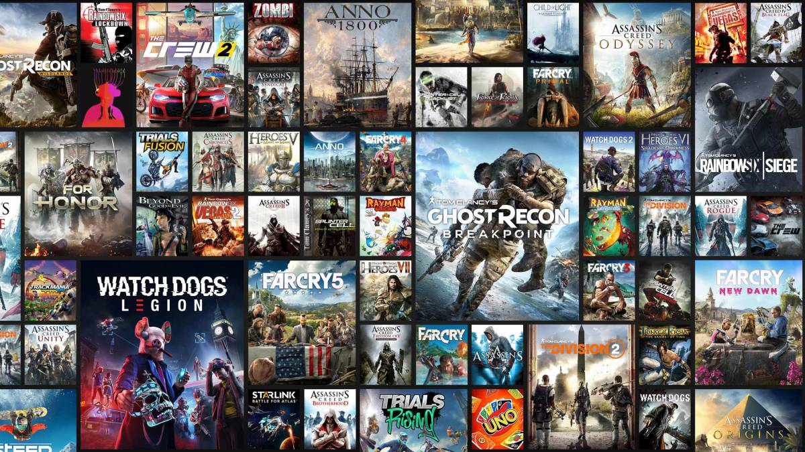

Ubisoft Entertainment S. A. es una empresa desarrolladora y distribuidora de videojuegos francesa, fundada el 28 de marzo de 1986 en Carentoir, en Bretaña, Francia. Yves Guillemot, uno de los fundadores, es el actual director ejecutivo y presidente de la compañía. Las sedes principales se ubican en Montreuil (Sena-Saint Denis), Francia, y tiene estudios de desarrollo en todo el mundo. Es la responsable de las franquicias y videojuegos exitosos y conocidos, como Assassin's Creed, Far Cry, Watch Dogs, Rainbow Six, The Division, Just Dance y Ghost Recon, posee los derechos de la serie de videojuegos Driver, creada por Atari y NHL Rivals, NFL Fever, NBA Inside Drive y MLB Inside Pitch creada por Xbox Game Studios. También ha ayudado a otras compañías a desarrollar y distribuir sus videojuegos. Actualmente Ubisoft es la compañía de videojuegos más grande e importante de Europa y la primera desarrolladora de videojuegos a nivel mundial.
Según Yves Guillemot, Ubisoft se dio cuenta de que los videojuegos sandbox, con cambios fluidos entre los modos individual y multijugador, proporcionaban más diversión a los jugadores, lo que llevó a la compañía a pasar de desarrollar juegos para un solo jugador a centrarse más en juegos conectados a Internet. Según Guillemot, Ubisoft se refiere internamente como "antes de The Division" y "después de The Division". En una entrevista con The Verge, Anne Blondel-Jouin, productora ejecutiva de The Crew convertida en vicepresidenta de operaciones en vivo, señaló que The Crew fue uno de los primeros juegos de Ubisoft en requerir una conexión permanente a Internet para poder jugar.
|  |